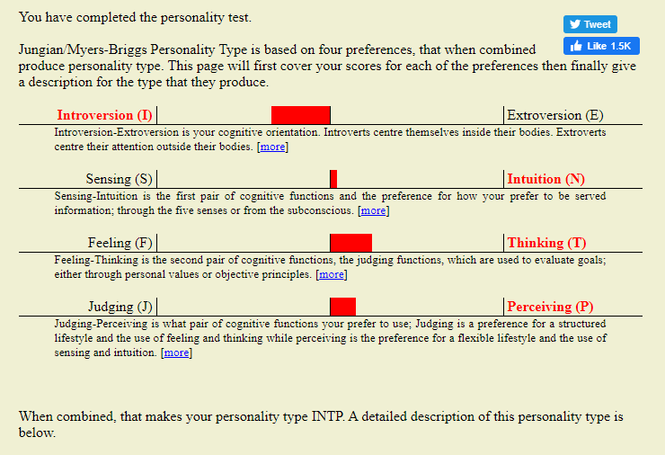

Name: Dylan Palmer
Student Number: s3863801
Email: s3863801@student.rmit.edu.au
My name is Dylan Palmer, I have worked in the IT industry since graduating school in 2015. I’ve worked in two different travel companies and now a construction / mining company. My roles have varied anywhere from working payroll to working in an international project development team. Now, living in rural South Australia I’ve decided to hone my IT skills in the hopes of a more challenging and more rewarding future in the IT industry.
Some interesting facts about myself, I was born in Australia but lived in Papua New Guinea for some years growing up. I relocated to a small town in New South Wales before moving on to live in Queensland for my high school years. Since leaving school and starting to work I’ve now ended up living in rural South Australia and absolutely loving every minute of it. I read, write and speak fluent English, I own a Border Collie named Scout, I enjoy playing basketball with friends in my down time from work.
Link to advertisement: https://www.seek.com.au/job/50104023?type=standout#searchRequestToken=36f4f1dc-e116-40f1-9d94-f1d7e05b14ad
The position of chosen is a Software Engineer, this role specifically is focuses on C++ and Python programming languages in what looks like an Artificial Intelligence, Machine Learning and Robotics field. I believe this role in particular really appeals to me as it focuses on Machine Learning and Artificial Intelligence, this is something I’ve grown up only ever seeing at the movies, it’s incredible to think that this is becoming more common place and readily achievable with enough hard work. Generally, I think the role of a Software Engineer appeals to me because although you would be working to achieve a specific goal, there is always going to be a challenge ahead and an incredible amount of possibilities to reach goal.
In order to be qualified and ready for a position like this their area few minimum requirements expected such as a Degree in Computer Science or being a Software Engineering Graduate, multiple years of experience coding in a C++ or Python specifically in a Linux environment and strong mathematical skills. I think the main focus here is the years of experience one would need to achieve in order to reach a competency level fit for the kind of advanced work this role is looking to accomplish.
In my eyes, my current Degree in IT is the first stepping stone towards learning the fundamentals of programming and the IT industry, along the way I aim to pick up new skills and learn new concepts. I aim to apply this to my own working life and hope to achieve some more robust experience in the required programming concepts and languages.
My result was INTP. I am lean towards Introversion, Intuition, Thinking and Perceiving. I think this is actually a very accurate description of how I’ve always seen myself. I’ve always been a quiet person until I really get to know people, I like to keep all my cards to myself until the right moment appears. I’ve never been a really “Feeling” person and in most situations would rather think through a situation to see a positive outcome rather than relying on my feelings, I think the same applies for the last point. I’ve always liked to take a backseat and look something over to try and find different approaches and ways of completing things rather than trying to make judgment calls on the fly.
I feel like this result shows a prospective employer my capability to isolate on a topic or problem to put the work in to find the quickest and most efficient result. One downside may be the employer seeing my Introversion as a lack of being able to participate as a team which in the professional industry could be a fatal flaw.
If I were looking to put together a team purely based on participant results of the Myers-Briggs style test I would aim to match people with similar outcomes. If I place an Introvert in a team focused project with a group of Introverts I wouldn’t expect the team to gel and work efficiently.

I couldn’t agree more with the results of this Learning Style test. Since I can remember I’ve always been a very Visual and Hands on learner, it is so much easier for me to get in and get my hands dirty to learn a new skill rather than have it explained or trying to read it. The more I can see and play with something, the faster I learn and the more confidence I can build.
I see both positive and negative aspects of my results if directly translating to working in a team. The majority of my learning and understanding comes from taking the time to see and work directly on a project or piece of software. I would find it more difficult to grasp a concept in a group project where I would only get to focus on a bite rather than the whole pie.
I don’t feel the results of this test fit me very well, I would have through that my sway towards Perspective and Curiosity would have been much higher due to the way I would normally go about solving problems. Instead I seem to lean towards Paradox and Boldness, two things I wouldn’t have picked myself.
In Tic Tac Toe or Naughts and Crosses two players compete in a three by three grid to create a row or line of three of the same symbols. Each player takes turns placing an “X” or an “O” in attempt to both achieve three in a row but at the same time block your opponent from reaching three in a row. Tic Tac Toe is known as a “Solved Game” which means that if both players move perfectly to find the most optimal placement of their token then every single game will come to a draw regardless of who makes the first move.
I’d like to use this knowledge to create an app that results in a draw every single game living up to the “Unbeatable” nature of the app title.
Growing up, Tic Tac Toe was a staple game to play with friends and family. It wasn’t until I was a little older and played a friendly match with my uncle at Christmas – he won the match every time he was able to make the first move yet whenever he made the second move the game would always result in him winning or the game coming out to a draw. This frustrated my young self, losing game after game I finally asked my uncle the trick. He explained to me his method of taking corner squares when you make the first move forcing the second player to make one of only a couple of logical moves which at that point the fate of the game is sealed. I took my new found knowledge to school and hustled my friends out of their lunch time snacks.
My app my would be primarily focused on people that aren’t aware Tic Tac Toe is already a “Solved Game”. It will be labelled as an “Unbeatable” opponent to hopefully encourage people to download the app and give it a crack. I would have four primary focuses;
Functionality:
From the get go I would like a simple application logo and a simple colour palette across the board. When the app is opened a simple splash screen should appear with a logo and game name. Once inside there will be a “Play” button, a customize button, a “Score” button and a “Secret Menu” that outlines some basic information on how the computer can never lose.
The “Play” button will start a game of Tic Tac Toe against the “Computer”, the user pick heads or tails and a coin flip animation will appear, dictating whether the player or computer will get the first move. If the player picks the wrong coin side the computer will go first by placing a token on the board. If the player wins, they will have the option to select one of six empty grid squares to place their token. Gameplay will revolve from player to computer until an outcome is met. The computer will either always draw or if the player faulters, always win. Upon a draw or win condition have a splash screen appear that holds some basic game information like a running score against the computer, length of the game and a “Victory” / “Draw” title. Player will have the option to return to the main menu or to challenge the computer again.
The “Customise” button will open a basic interface that allows the player to select a colour theme from a bank of pre-set themes or allow for the player to select a “Primary” and “Secondary” colour to adjust text, background and game grid colours as well as changing the player token and the computer token, these might range from basic shapes to letters, symbols and pictures to allow for a basic level of customisation and add a little variety to add another layer of depth to an already simple game, to add another layer of depth again you could add a “Unlock” functionality that rewards the player for extended gameplay.
The “Score” button will display basic information such as the total time played against the computer which will add all play time and display a running total of time spent against the computer. I’d like to reference to every time the computer has beaten or drawn against the player just to rub in the fact the player can never win a little more.
I would like to add a “Secret Screen” to the application, perhaps if the player clicks the corner of the screen or drags a window in a particular direction. If the player stumbles upon this “Easter Egg” I would like a small “Message from the developer” outlining my story, the reason for creating the app and a small summary on how the computer is able to always win or result in a draw.
In order to develop the application for iPhone devices I will need an Apple Developer License which can be purchased for a fee of $99 per year via the Apple website, this license allows for the publication of applications in Apples Appstore. In addition to the Developer License I will also need a development tool which there are many e.g. Xcode, Alcatraz or Mockingbird.
In order to develop the application of Android devices I will need a development tool such as Appery.io, Mobile Roadie or The App Builder. No developer license is required to publish an app on the google play store.
In order to develop an iPhone application, I will need knowledge in the “Standard” language iPhone apps are written in called “Objective-C” as well as a comprehensive knowledge of Xcode, the tool of my choice for this project. I can either test and debug my application using Xcode’s built in iPhone emulator, use my physical iPhone or use an online tool like Browser Stack which allows the user to emulate a variety of physical phones. Once complete I will need to submit my application to the Apple app store for verification before final publication. Having some basic experience in Xcode and a familiarity with iPhone architecture I think that learning the additional knowledge to complete my app is very much feasible.
In order to develop an Android application, I will need additional knowledge in the Java programming language as well as a comprehensive understanding of Appery.io, my preferred development tool. I will use the online tool Browser Stack to test my application as I do not have a physical android device to test on. Once complete I will need to submit my application to the Google Play store for verification before final publication. Completing the app development for Android would be very much based on time constraint as I lack the knowledge to both code in Java and understand the Android platform. The Android app could be delivered in a “Phase 2” release.
When I am able to open the Appstore on my mobile, complete a search for my Unbeatable Tic Tac Toe, download it and play it bug free I will consider the project complete. People will be able to test their Tic Tac Toe knowledge, share and challenge amongst friends and I will get a kick out of the statistics and how much time people have invested in an attempt to defeat the “Un-beatable” computer.
I will have learned new and valuable app development skills and a basic knowledge of two separate coding languages. In the future I will be able to undertake more ambitious projects and reduce the time frame due to a better understanding of the entire process.